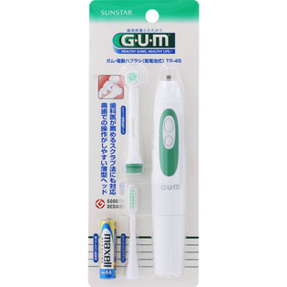

返回列表
产品名称：ガム・電動ハブラシ ＴＳ－４５ ［スタンダードタイプ］

サンスター ガム・電動ハブラシ ＴＳ－４５ ［スタンダードタイプ］ ＿
メーカー サンスター
JANコード 4901616213654
商品の特徴
歯科医が薦めるスクラブ法にも対応
奥歯での操作がしやすい薄型ヘッド
※当商品は複数カラーございますが、カラーはご指定頂けません。商品画像のカラーと異なる場合がございます。予めご了承ください。
成分・分量
用法及び用量
＜替ブラシ＞
ガム・電動替ブラシ ＃477 ［高速反転タイプ専用］、ガム・電動替ブラシ ＃377 ［スクラブタイプ専用］